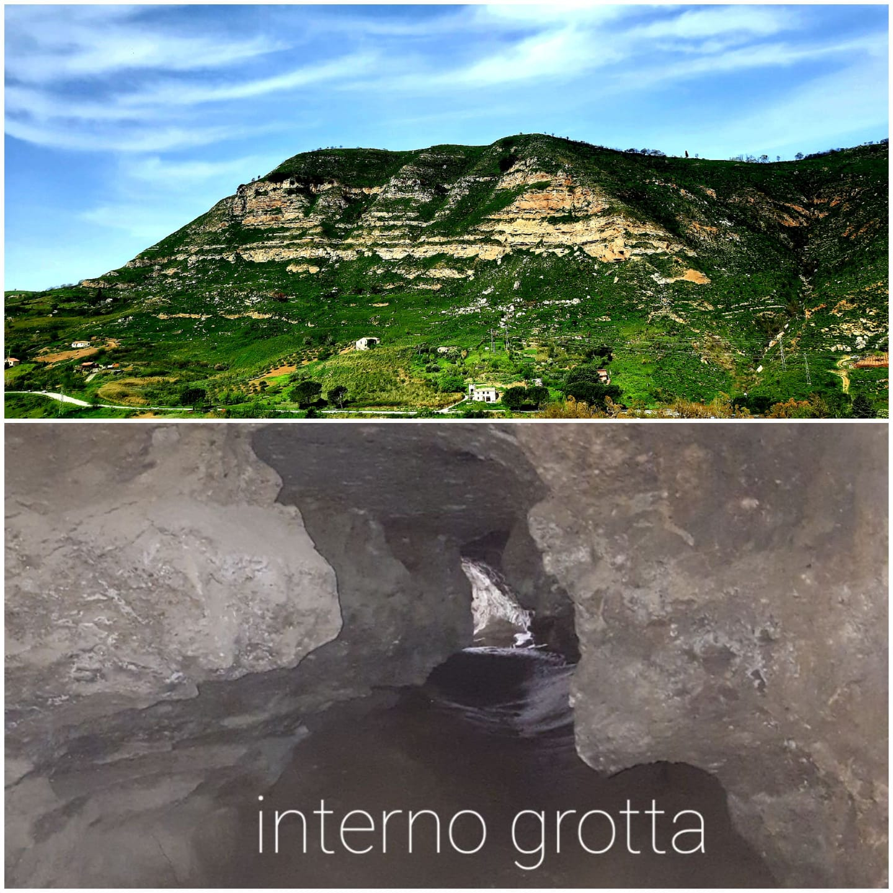

Cozzo Prangi – Grotta del Vecchiuzzo

ITALIANO - Rilievo costituito da sedimenti che bene esprimono il ciclo gessoso‐solfifero affiorante nelle zone madonite e in cui si trovano, stratigraficamente dal basso verso l’alto: Argille azzurre e calcareniti della Fm. Terravecchia, calcari bioclastici a coralli (Porites), gessi selenitici e gessareniti del Messiniano, Fanglomerati del Messiniano sup., marne bianche e argille marnose a foraminiferi plantonici (Trubi) del Pliocene. All’interno dell’affioramento gessoso un maturo processo carsico, agevolato dalla neotettonica, ha creato un condotto sub‐orizzontale che nel Neolitico è stato antropizzato con riscontri archeologici di rara bellezza. (Miocene sup. – Pliocene inf./medio)
ENGLISH - Relief consisting of sediments that clearly express the chalky sulfurous cycle surfacing in the Madonie areas and where they are located, stratigraphically from bottom to top: blue Clays and calcarenite of the Terravecchia Formation, bioclastic coral limestone (Porites), selenite chalks of the Messinian, Messisian ‘Fanglomerati’ sup., white marl and marly clay with plantonic foraminifers (Trubi) of the Pliocene. Within the chalky outcrop, a mature karst process, facilitated by Neotectonics, created a sub-horizontal duct that in the Neolithic was man-made with archeological findings of rare beauty. (Miocene sup. – Pliocene inf./medio).